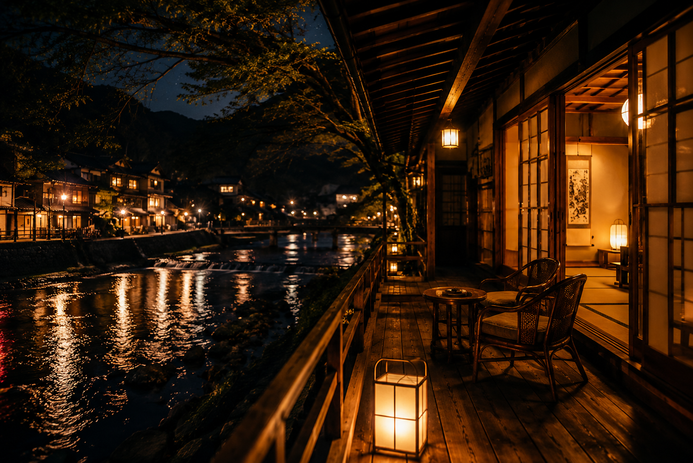
A day in Toomachi
とおまちで過ごす、夏の一日。
動画
夕方到着
駅からとおまちへ
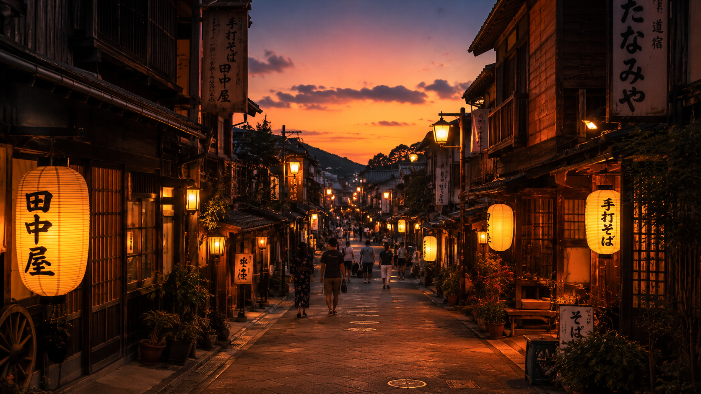
商店街を散策
レトロな町をぶらり
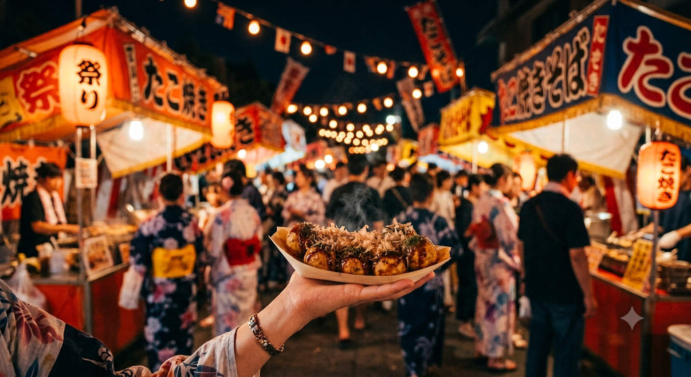
食べ歩き
地元グルメを堪能
動画
花火を鑑賞
川辺でゆったり
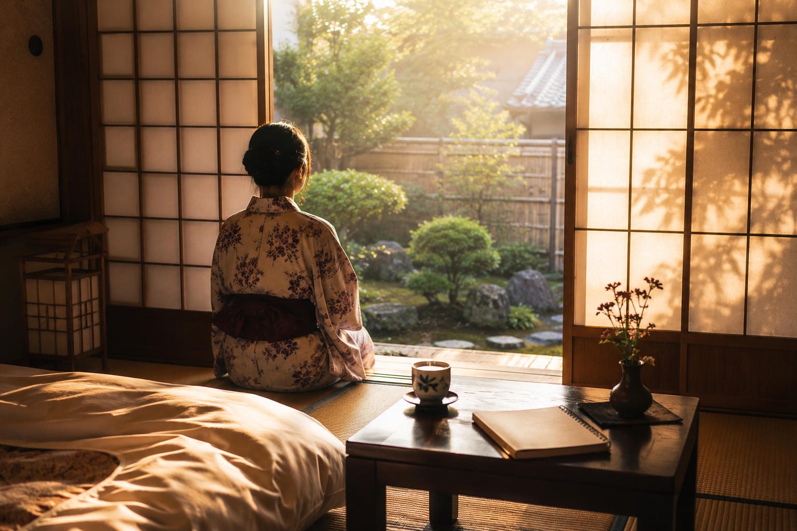
宿でゆっくり
翌日も町を満喫
🔊 タップで声が聞けるよ
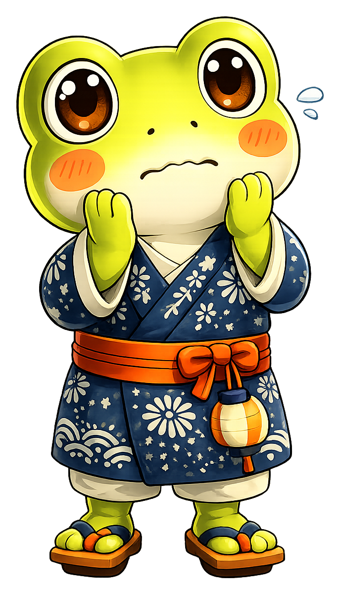
混雑がすごい
人が多すぎてゆっくり見られない。帰りの電車も地獄…
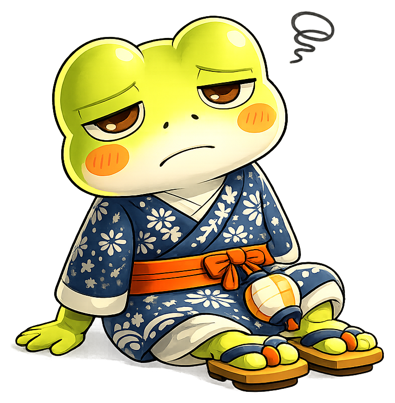
移動が疲れる
遠出するほどの気合いは出したくないけど、近場じゃ物足りない…
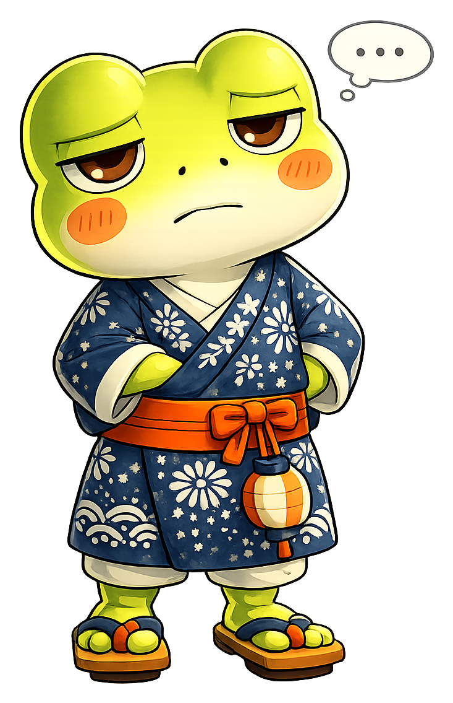
毎年同じ場所
「また今年も同じとこ？」少し物足りなくなってきた…
だから今年は、少しだけ違う夏にしませんか？
とおまちの夏花火ナイト
駅から徒歩10分
気合いを入れなくても、ふらっと来られる。車なしでもOK。
商店街で食べ歩き
花火が始まる前から楽しめる。レトロな縁日の雰囲気が漂う商店街。
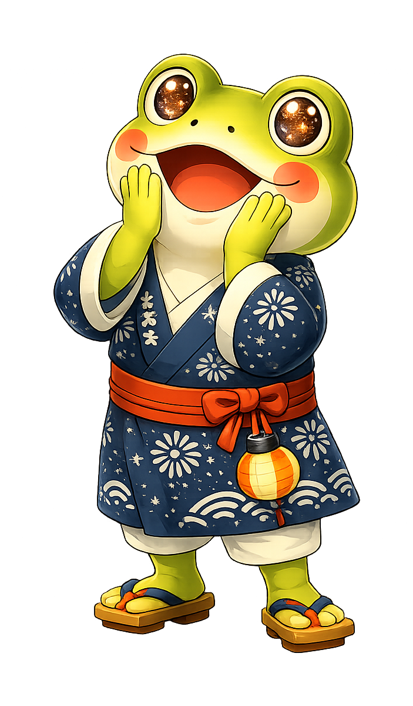
ちょうどいい規模感
約3,000発。川幅が近いから迫力は十分。混雑しすぎない、ゆったり楽しめる規模。
A day in Toomachi
夕方到着
駅からとおまちへ

商店街を散策
レトロな町をぶらり

食べ歩き
地元グルメを堪能
花火を鑑賞
川辺でゆったり

宿でゆっくり
翌日も町を満喫
イベント情報
川幅が近いから、花火が近く感じる。
打ち上げ数
約3,000発
開催日
8月中旬
土曜日（年1回）
会場
とおまち川
河川敷
アクセス
駅から
徒歩約10分
有料観覧席
¥1,500（税込）/ 1名
場所取り不要、当日ふらっと来ても特等席。
事前予約制・先着順 ／ キャンセル：前日17時まで無料
花火だけで帰るのは、少しもったいない。
宿泊すれば、翌朝もゆっくり町を楽しめます。
おすすめの宿（3件）

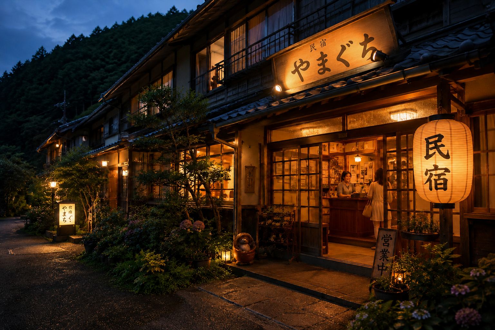
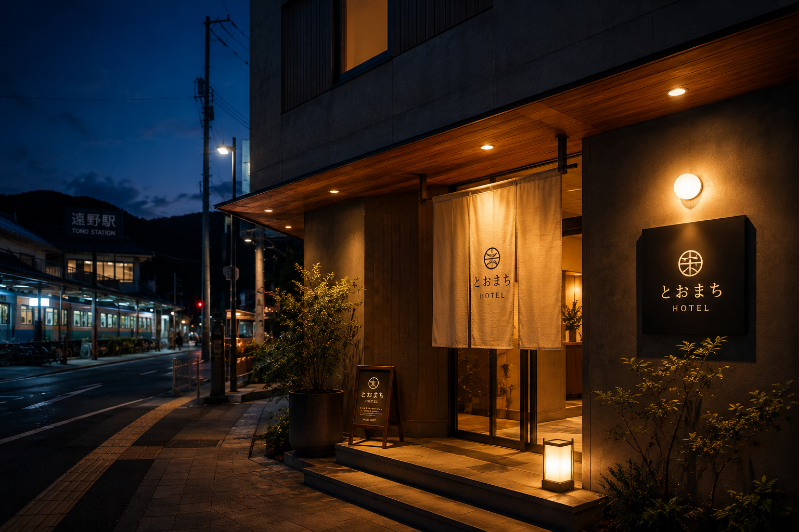
グルメ・お店（6件）
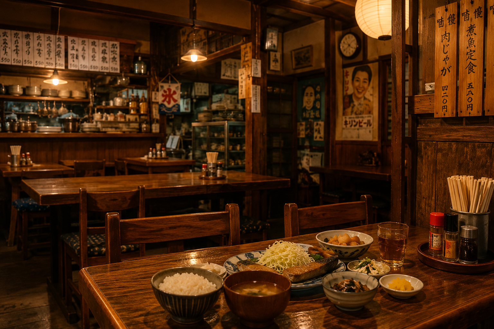
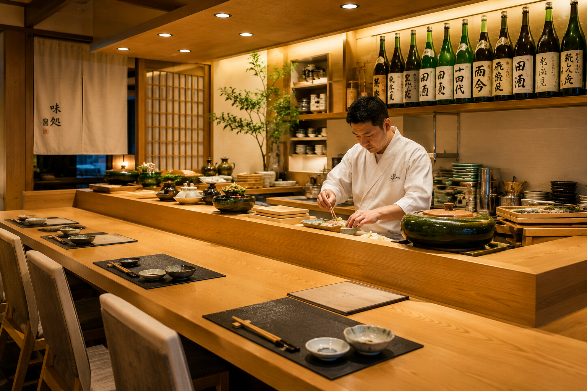
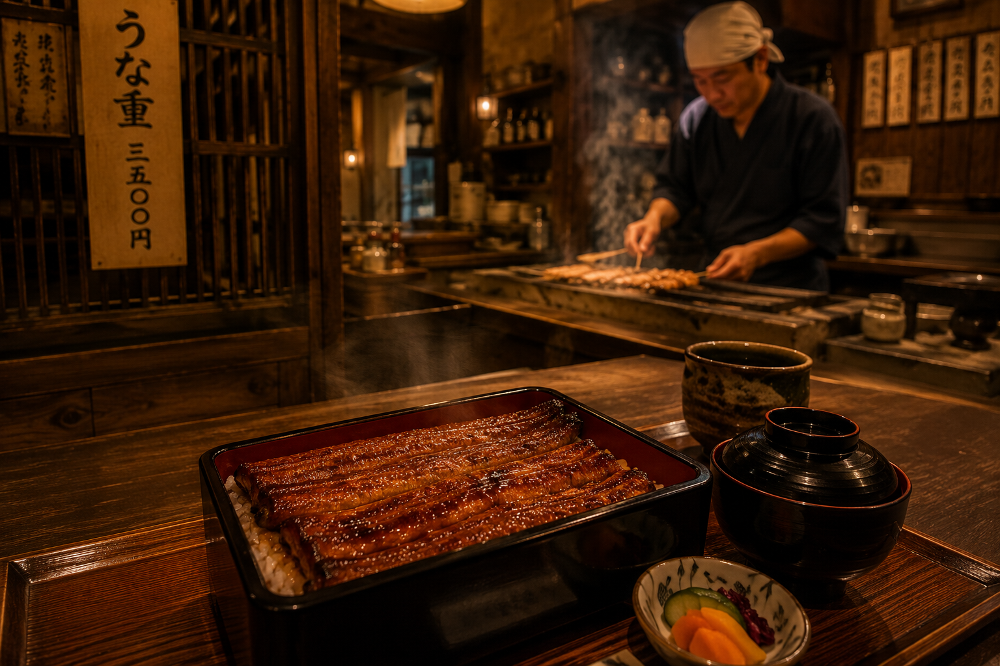
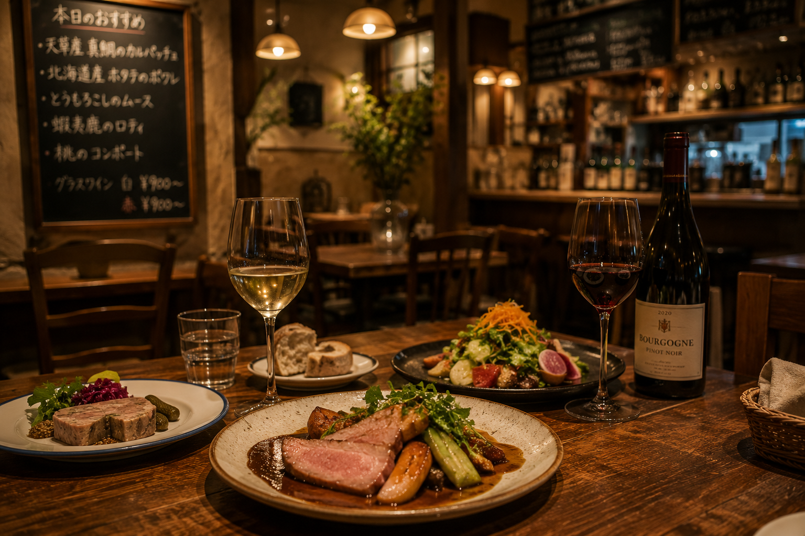
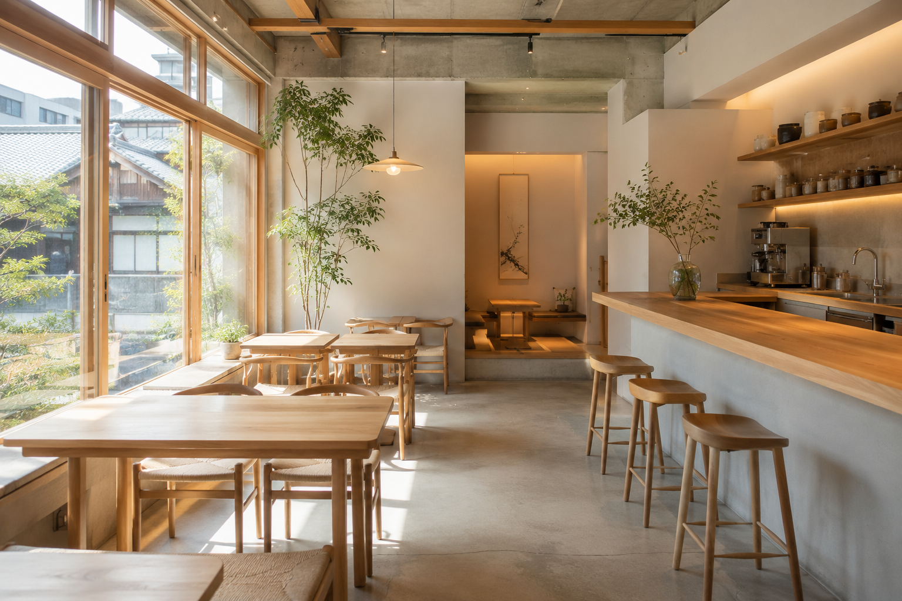
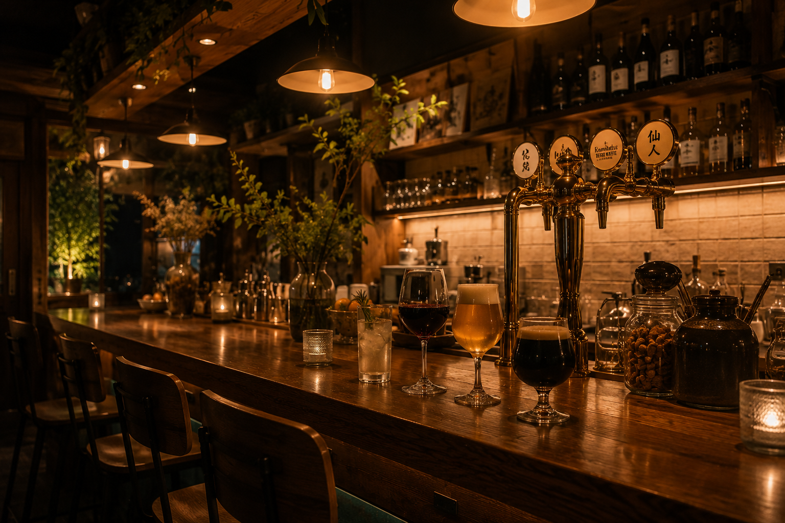
Access
Voice
「正直、花火大会ってどこも混んでて疲れるイメージだったんですが、ここは思ったよりゆったり見られて、ふらっと来てよかったです。」
「商店街の出店を見ながら歩くだけで楽しくて、花火が始まる前から十分楽しめました。」
「駅からすぐだったので、思っていたより気軽に行けました。」
「派手さよりも、ゆったりした雰囲気が良くて、また来てもいいかなと思いました。」
FAQ
日帰り観覧は予約不要です。ゆったり座って見たい場合は、有料観覧席のご予約をおすすめします。
最寄り駅から徒歩約10分です。当日は周辺道路が混雑するため、お車でのご来場はおすすめしておりません。
小雨決行です。荒天時は翌日に延期となる場合があります。最新情報は当日公式LINEでご案内します。
はい。混雑が激しくない規模感のため、お子様連れのご家族にも来場いただいています。
LP内でご紹介している宿泊施設から気になるところをお選びいただき、公式LINEからお気軽にご相談ください。空室状況やプラン内容について、スタッフが個別にご案内します。
有料観覧席は前日17時まで無料でキャンセル可能です。
都市部の大規模花火大会に比べると、混雑は穏やかです。ゆったり過ごしたい方に向いています。
商店街エリアに多数の出店が並びます。食べ歩きグルメも楽しみのひとつです。
今年の夏。
日帰りでも、お泊まりでも。好きな過ごし方で。
Reservation
有料観覧席：¥1,500（税込）/ 1名 事前予約制・先着順
ご入力いただいたメールアドレスに確認メールをお送りしました。
当日、とおまちでお会いできることを楽しみにしています。
また来年も。
とおまちで待っています。